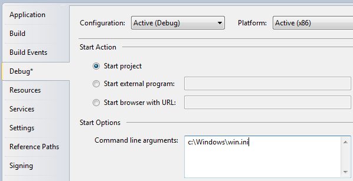

Command-line parameters in WPF
Command-line parameters are a technique where you can pass a set of parameters to an application that you wish to start, to somehow influence it. The most common example is to make the application open with a specific file, e.g. in an editor. You can try this yourself with the built-in Notepad application of Windows, by running (select Run from the Start menu or press [WindowsKey-R]):
notepad.exe c:\Windows\win.ini
This will open Notepad with the win.ini file opened (you may have to adjust the path to match your system). Notepad simply looks for one or several parameters and then uses them and your application can do the same!
Command-line parameters are passed to your WPF application through the Startup event, which we subscribed to in the App.xaml article. We will do the same in this example, and then use the value passed on to through the method arguments. First, the App.xaml file:
<Application x:Class="WpfTutorialSamples.App"
xmlns="http://schemas.microsoft.com/winfx/2006/xaml/presentation"
xmlns:x="http://schemas.microsoft.com/winfx/2006/xaml"
Startup="Application_Startup">
<Application.Resources></Application.Resources>
</Application>
All we do here is to subscribe to the Startup event, replacing the StartupUri property. The event is then implemented in App.xaml.cs:
using System;
using System.Collections.Generic;
using System.Windows;
namespace WpfTutorialSamples
{
public partial class App : Application
{
private void Application_Startup(object sender, StartupEventArgs e)
{
MainWindow wnd = new MainWindow();
if(e.Args.Length == 1)
MessageBox.Show("Now opening file: \n\n" + e.Args[0]);
wnd.Show();
}
}
}
The StartupEventArgs is what we use here. It's passed into the Application Startup event, with the name e. It has the property Args, which is an array of strings. Command-line parameters are separated by spaces, unless the space is inside a quoted string.
Testing the command-line parameter
If you run the above example, nothing will happen, because no command-line parameters have been specified. Fortunately, Visual Studio makes it easy to test this in your application. From the Project menu select "[Project name] properties" and then go to the Debug tab, where you can define a command-line parameter. It should look something like this:
Try running the application and you will see it respond to your parameter.
Of course, the message isn't terribly useful. Instead you might want to either pass it to the constructor of your main window or call a public open method on it, like this:
using System;
using System.Collections.Generic;
using System.Windows;
namespace WpfTutorialSamples
{
public partial class App : Application
{
private void Application_Startup(object sender, StartupEventArgs e)
{
MainWindow wnd = new MainWindow();
// The OpenFile() method is just an example of what you could do with the
// parameter. The method should be declared on your MainWindow class, where
// you could use a range of methods to process the passed file path
if(e.Args.Length == 1)
wnd.OpenFile(e.Args[0]);
wnd.Show();
}
}
}
Command-line possibilities
In this example, we test if there is exactly one argument and if so, we use it as a filename. In a real world example, you might collect several arguments and even use them for options, e.g. toggling a certain feature on or off. You would do that by looping through the entire list of arguments passed while collecting the information you need to proceed, but that's beyond the scope of this article.